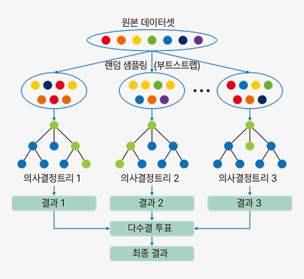

개념 학습
분류 알고리즘
로지스틱 회귀
로지스틱 회귀는 주어진 입력 데이터를 바탕으로 결과가 특정 클래스에 속할 확률을 예측하는 알고리즘이다. 로지스틱 회귀는 S자 모양의 곡선을 그린 결과를 이용해 예측한다.
로지스틱 함수를 이용하면 새로운 입력값이 어느 범주에 속하는지 분류할 수 있다.
로지스틱 함수는 주로 이진 분류에서 사용되며 입력값을 0과 1 사이의 출력값으로 변환하는 역할을 한다.
로지스틱 회귀
앙상블
앙상블(ensemble)은 여러 모델을 결합하여 성능을 향상하는 방법이다.
앙상블은 단일 모델보다 더 높은 성능을 가지고 과적합을 감소하여 다양한 문제에 적용할 수 있는 정확한 예측을
수행한다. 앙상블의 샘플링 방식인 부트스트랩의 각 샘플은 훈련 데이터에 여러 번 나타날 수 있으며 이로 인해 각 모델이 특정 훈련 데이터에 지나치게 의존하는 것을 방지하여 과적합을 줄여 준다.
앙상블 방법에 사용하는 기법 중 하나인 배깅을 적용한 대표적 알고리즘은 랜덤 포레스트이다. 그림과 같이 여러 개의 랜덤한 의사결정트리를 병렬로 연결해 마지막에
다수결 투표를 하고 투표수가 가장 많은 클래스를 정해
분류한다. 이는 여러 전문가의 의견을 모아 결정을 내리는 방식과 비슷하다.
앙상블은 단일 모델보다 더 높은 성능을 가지고 과적합을 감소하여 다양한 문제에 적용할 수 있는 정확한 예측을
수행한다. 앙상블의 샘플링 방식인 부트스트랩의 각 샘플은 훈련 데이터에 여러 번 나타날 수 있으며 이로 인해 각 모델이 특정 훈련 데이터에 지나치게 의존하는 것을 방지하여 과적합을 줄여 준다.
앙상블 방법에 사용하는 기법 중 하나인 배깅을 적용한 대표적 알고리즘은 랜덤 포레스트이다. 그림과 같이 여러 개의 랜덤한 의사결정트리를 병렬로 연결해 마지막에
다수결 투표를 하고 투표수가 가장 많은 클래스를 정해
분류한다. 이는 여러 전문가의 의견을 모아 결정을 내리는 방식과 비슷하다.

랜덤 포레스트의 분류